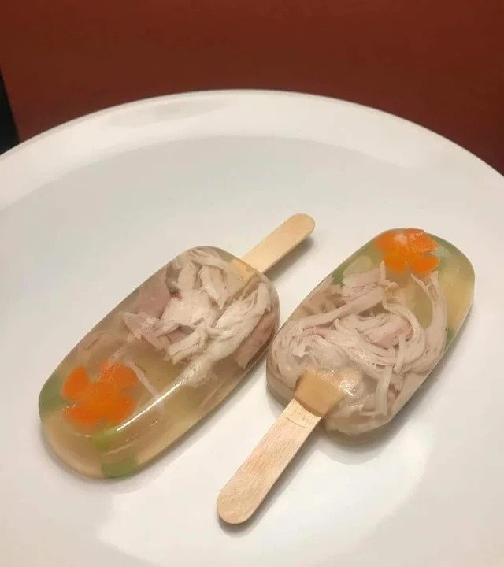

Chicken Noodle Soupsicles

Description
Chicken noodle soupsicles are popsicles made from chicken noodle soup.
They are a close relative of spaghettio popsicles.
If you desire to make those, simply substitute spaghettios for chicken noodle soup.
They were created by Reddit user u/iplay2keep and posted on r/shittyfoodporn.
You can see the original post here.
These delicious popsicles make a bold statement about the suffering of others.
Chicken noodle soup, a symbol of warmth and healing, is violated against its control and
frozen, denying it its purpose in existence and leading it to be hated.
However, humanity seems to find its despair tasty and humorous.
Ingredients
- 2 tablespoons unsalted butter
- 2 carrots, peeled and diced
- 1 1/2 cup peas
- 3 cloved garlic, minced
- 8 cups chicken stock
- Salt and pepper to taste
- 2 1/2 pounds bone-in, skinless chicken breasts
- 2 1/2 cups noodles of choice
Steps
- Melt butter in large pot over medium heat
- Add carrots and peas into pot
- Cook and stir occasionally for about 3-4 minutes, or until tender
- Stir in garlic for about 1 minute, or until fragrant
- Stir in chicken stock and season with salt and pepper
- Add chicken and bring to boil
- Cover pot and simmer for about 30-40 minutes, or until chicken is fully cooked
- Remove chicken and let cool
- Discard chicken bones and shred chicken
- Stir in chicken and noodles for about 6-7 minutes, or until tender
- Remove from heat and season with salt and pepper, and other spices to taste
- Pour into silicone popsicle mold and insert wooden popsicle sticks
- Freeze until solid and remove from mold
- Optional: smear on miso paste for extra umami flavor
- Serve and enjoy!